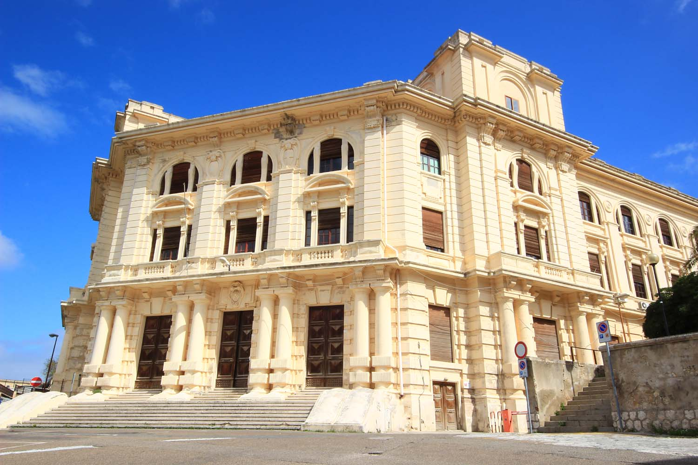

STAG 2022 will be held in Cagliari, at the Palazzo delle Scieze. Palazzo delle Scienze (Science Building) was designed and built in the 1920s with other university
buildings as part of the vast program of public building interventions covering the whole of Sardinia.
Today the building houses the Department of Mathematics and Computer Science and still retains interesting
period instruments. Palazzo delle Scienze is located in the heart of Cagliari, in "via Ospedale 72".
[See it on Google Maps]

Authors are invited to submit original and unpublished research papers, as well as dataset papers and software papers.
Research papers (not exceeding 10 pages in length, excluding references) are expected to propose innovative mathematical theories and computational techniques in the fields of Computer Graphics, Computer Vision and Human-Computer Interaction.
Dataset papers (not exceeding 8 pages in length, excluding references) are expected to be more than just a dump of raw data. They should provide, document, and discuss new larger and/or more challenging datasets or datasets that stimulate new challenges in either computer graphics or computer vision (e.g., new kinds of data that in turn demand new kinds of algorithms).
Software papers (not exceeding 8 pages in length, excluding references) are expected to be stand-alone papers describing and discussing innovative scientific software and/or open libraries. Upon acceptance, source code must be released according to an open-source license through a public git repository.
Submissions should be formatted according to the style guidelines for the Computers &Graphics Journal. We strongly recommend using the LaTeX template to format your paper. Additional materials are welcome. For format details, please refer to the Computers & Graphics Journal Guide for Authors.
Electronic submission of all papers is mandatory and will be conducted using Easychair (Submission Link available soon). Submitted papers will undergo a double-blind reviewing process. Consequently, all submissions must be anonymous. Accepted papers will be included in the STAG proceedings, published in the Eurographics Digital Library (Upcoming papers of the last edition can be found here) and indexed by Scopus. The authors of selected best papers from the conference will be invited to submit extended versions to a Special Issue of either the Computers & Graphics Journal (Elsevier) or the Graphics and Visual Computing (GVC) Journal (Elsevier).
For any question concerning full paper submissions and publications please send an e-mail to stag2022@unica.it or contact the members of the organization:
Daniela Cabiddu (daniela.cabiddu@cnr.it), CNR-IMATI (Italy), Program co-chair
Teseo Schneider (teseo@uvic.ca), University of Victoria (Canada), Program co-chair
Gianmarco Cherchi (g.cherchi@unica.it), University of Cagliari (Italy), Conference chair